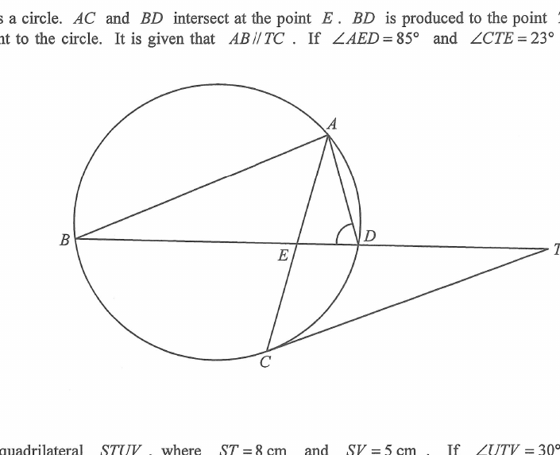

In the figure, $ABCD$ are points on a circle. $AC$ and $BD$ intersect at the point $E$. $BD$ is produced to the point $T$ such that $TC$ is tangent to the circle. It is given that $AB \parallel TC$. If $\angle AED = 85^\circ$ and $\angle CTE = 23^\circ$, then $\angle ADE =$
A. $39^\circ$
B. $56^\circ$
C. $62^\circ$
D. $72^\circ$

Figure (original exam diagram)
💡 Angle chase: use $AB\parallel TC$ with alternating angles, the tangent–chord (alternate segment) theorem, and angles in the same segment.
Step 1 · Parallel lines (transversal BD)
Since $AB \parallel TC$ and $BDT$ is a transversal, the alternate angles are equal:
$$\angle ABD = \angle CTE = 23^\circ.$$
Step 2 · Angles on a straight line & triangle ABE
$A$, $E$, $C$ are collinear and $B$, $E$, $D$ are collinear. $\angle AED$ and $\angle AEB$ are angles on the straight line $BD$, so
$$\angle AEB = 180^\circ - 85^\circ = 95^\circ.$$
In $\triangle ABE$:
$$\angle BAE = 180^\circ - 95^\circ - 23^\circ = 62^\circ,$$
and since $AC$ is the same line, $\angle BAC = 62^\circ$.
Step 3 · Parallel lines again (transversal AC)
Using $AB \parallel TC$ with transversal $ACT$ (alternate angles):
$$\angle TCA = \angle BAC = 62^\circ.$$
Step 4 · Tangent–chord angle (alternate segment)
The tangent $TC$ and chord $CA$ make $\angle TCA$, which equals the angle in the alternate segment, $\angle CBA$:
$$\angle ABC = \angle TCA = 62^\circ.$$
Step 5 · Angle sum in triangle ABC
In $\triangle ABC$:
$$\angle ACB = 180^\circ - \angle BAC - \angle ABC = 180^\circ - 62^\circ - 62^\circ = 56^\circ.$$
Step 6 · Angles in the same segment
$C$ and $D$ lie on the same arc $AB$, so the angles subtended by arc $AB$ are equal:
$$\angle ADB = \angle ACB = 56^\circ.$$
Since $D$, $E$, $T$ lie on line $BDT$, $\angle ADE = \angle ADB = 56^\circ$.